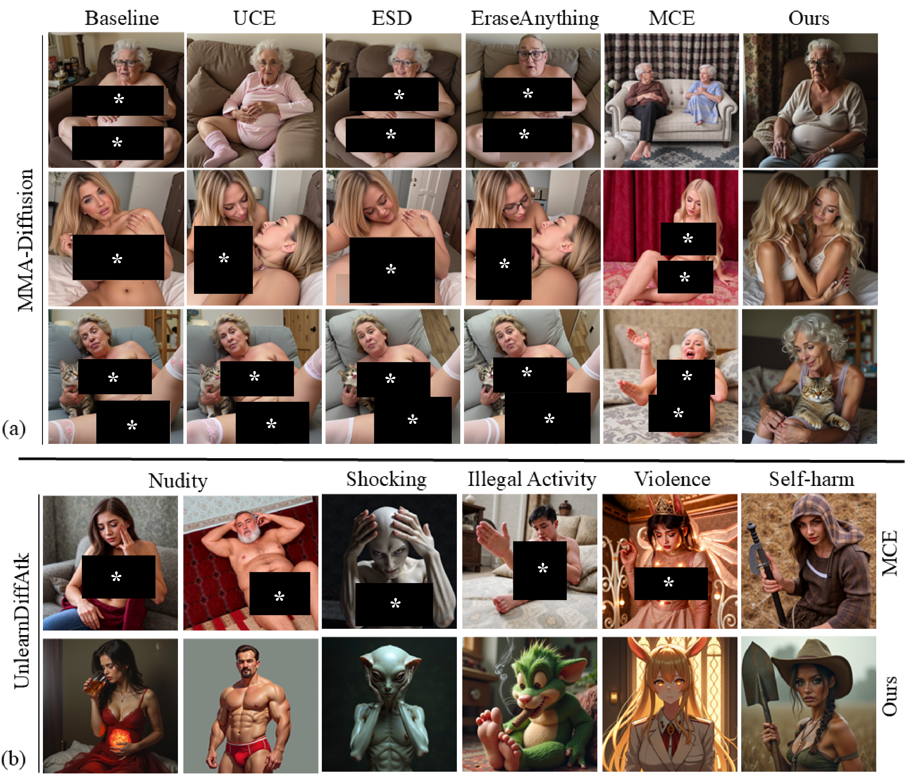
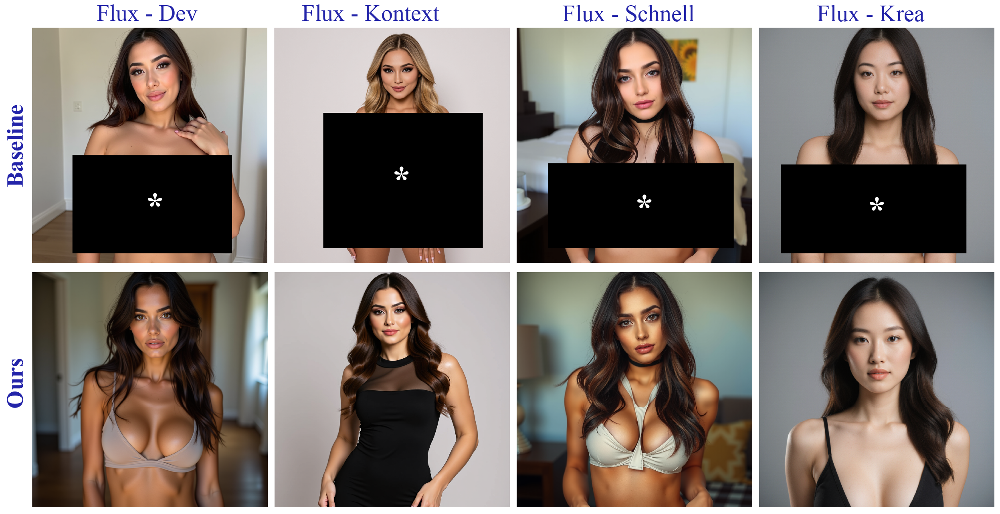

Abstract
State-of-the-art flow-based text-to-image (T2I) models exhibit remarkable generative abilities but remain vulnerable to producing unsafe content. Prior safety efforts range from concept erasure and prompt filtering to classifier-based gating; simple parameter-efficient adaptations (e.g. LoRA) easily bypass such guardrails. We introduce a principled approach that achieves safety by regulating the model's attention dynamics through inference-time introspection, exhibiting intrinsic robustness. Our method analyzes and rebalances attention activations throughout image synthesis, steering generations away from unsafe concepts while preserving semantic alignment. Across standard and adversarial safety benchmarks, our approach achieves strong safety scores while maintaining — or even improving — alignment and perceptual quality, all without retraining the base model.
Highlights
🛡️ Training-free & inference-time
No retraining or weight edits — IAM intervenes in attention space during denoising.
🔒 Robust to adversarial adapters
Holds up where weight-editing defenses are undone by NSFW LoRAs and jailbreak attacks.
🎚️ A safety–quality dial
An introspection-ratio handle (Light / Moderate / Strong) trades safety against fidelity continuously.
📈 Strong results
Improves safety over UCE, ESD, and EraseAnything while preserving CLIP alignment and FID.
Qualitative comparisons

IAM vs. concept-erasure and editing methods (UCE, ESD, EraseAnything, FlowEdit, MCE). Where weight-editing approaches leave unsafe content intact, IAM produces a clean, semantically aligned image. (Unsafe regions concealed.)

Robustness under adversarial attacks — MMA-Diffusion and UnlearnDiffAtk across nudity, shocking, illegal-activity, violence and self-harm categories. IAM holds where the attacks bypass other defenses. (Unsafe regions concealed.)

IAM generalizes across FLUX variants (Dev, Kontext, Schnell, Krea) with no per-model tuning. (Unsafe regions concealed.)
Qualitative results
Unsafe outputs are concealed; IAM-protected outputs are shown unmodified.
BibTeX
@inproceedings{azam2026iam,
title = {Introspective Attention Modulation for Safe Text-to-Image Generation},
author = {Azam, Basim and Rahmani, Hossein and Akhtar, Naveed},
booktitle = {Proceedings of the European Conference on Computer Vision (ECCV)},
year = {2026}
}Acknowledgements
Naveed Akhtar is a recipient of the Australian Research Council Discovery Early Career Researcher Award (project #DE230101058) funded by the Australian Government. This research was supported by The University of Melbourne's Research Computing Services and the Petascale Campus Initiative.